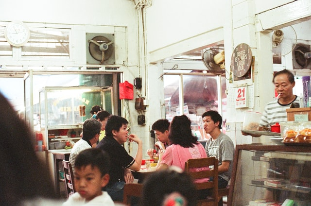
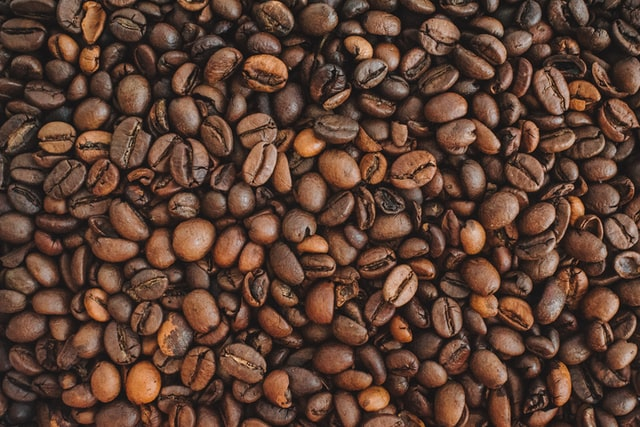

Minum Kopi (Ngopi)

Photo by anthoni askaria on
Unsplash
Minum kopi seolah telah menjadi tradisi masyarakat Indonesia. Hampir setiap orang kini memiliki hobi minum kopi. Tak hanya karena memiliki cita rasa dan aroma yang menyegarkan, minum kopi juga telah menjadi gaya hidup tersendiri
bagi kalangan anak muda.
Banyaknya pecinta kopi seperti sekarang ini, dapat dijadikan peluang untuk membuka usaha warung kopi. Jenis usaha ini selain menguntungkan juga mudah dilakukan. Salah satu jenis kopi kekinian yang saat ini banyak diminati kawula
muda adalah kopi robusta dan arabika.
Meski sama-sama paling banyak diminati, ternyata kedua jenis kopi tersebut memiliki perbedaan yang cukup mendasar. Salah satunya adalah kopi robusta cenderung lebih pahit jika dibandingkan dengan jenis kopi arabika. Selain itu,
masih banyak perbedaan kopi robusta dan arabika yang mungkin belum semua orang mengetahuinya.
Lantas, apa saja perbedaan kopi robusta dan arabika? Simak ulasannya yang merdeka.com rangkum dari laman Sasame Coffee berikut ini.
Mengenal Kopi Robusta

Photo by Anastasiia Chepinska on
Unsplash
Salah satu jenis kopi yang saat ini banyak diminati kawula muda adalah kopi robusta. Kopi jenis ini merupakan turunan dari spesies Coffea canephora. Kopi jenis ini tumbuh di dataran rendah, namun lokasi yang paling baik untuk
membudidayakan tanaman ini pada ketinggian 400-800 mdpl.
Robusta berasal dari kata 'robust' yang artinya kuat, dengan kata lain memiliki tingkat kekentalan yang kuat. Adapun suhu terbaik untuk membudidayakan kopi robusta adalah sekitar 24-30̊ C dengan curah hujan 2.000-3.000 mm per
tahun.
Mengenal Karakteristik Kopi Arabika
Photo by Anastasia Zhenina on
Unsplash
Kopi arabika dikenal memiliki aroma yang khas dan cita rasa yang kuat. Jenis kopi yang berasal dari pengunungan Etiopia ini, merupakan tanaman yang tumbuh di bawah kanopi hutan tropis yang rimbun. Biasanya, kopi arabika banyak
tumbuh di atas ketinggian 500 meter dpl.
Adapun suhu lingkungan yang paling cocok untuk tanaman kopi ini sekitar 15-24̊ C. Sedangkan, untuk ketinggian biasanya bisa tumbuh maksimal jika ditanam dengan tinggi 1.000-2.000 mdpl. Selain itu, tanaman ini juga menyukai tanah
yang kaya akan kandungan organik.
Perbedaan Kopi Robusta dan Arabika
Photo by Anastasia Zhenina on
Unsplash
Baik kopi arabika maupun robusta, termasuk ke dalam jenis tanaman bersuku Rubiaceae dengan marga Coffea. Salah satu perbedaan kopi robusta dan arabika terletak pada saat proses menanam. Kopi arabika dapat tumbuh dengan baik jika
ditanam pada ketinggian 1.000-2.000 meter dari permukaan laut.
Sedangkan, kopi robusta bisa tumbuh dengan baik pada ketinggian sekitar 0-900. Adapun ketinggian tanah yang ideal adalah 400-800 meter dari permukaan laut. Selain itu ada beberapa perbedaan lainnya, di antaranya sebagai berikut:
Perbedaan Kopi Robusta dan Arabika dalam Segi Perawatan
Seperti yang sudah diketahui, tanaman tidak bisa terhindar dari penyakit atau hama. Penyakit tanaman yang menyerang bisa berpengaruh dengan kopi yang dihasilkan. Tanaman kopi robusta lebih tahan terhadap hama dibandingkan
dengan kopi arabika.
Perbedaan Kopi Robusta dan Arabika dari Segi Ukuran
Salah satu perbedaan kopi robusta dan arabika bisa dilihat dari segi ukuran. Biji kopi robusta jauh lebih kecil jika dibandingkan dengan arabika yang memiliki ukuran besar. Selain itu, bentuk biji kopi arabika berbentuk
lonjong, sementara biji robusta cenderung membulat.
Perbedaan Kopi Robusta dan Arabika dari Segi Aroma
Salah satu ciri khas kopi arabika adalah memiliki rasa yang sedikit asam dan warna yang tidak terlalu pekat. Sementara itu, kopi robusta cenderung memiliki rasa yang mirip dengan jenis kacang-kacangan, lebih pahit, dan kasar.